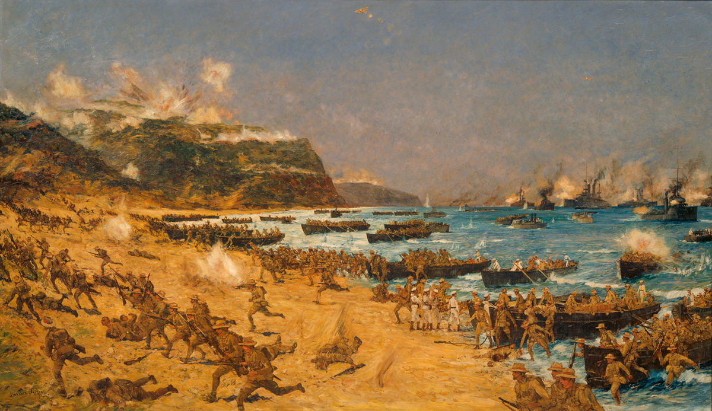

Gallery
Landing at Gallipoli

Landing at Gallipoli, by Charles Dixon. This painting is part of the National Collection of War Art held by Archives New Zealand. In the history of the Great War, the Gallipoli campaign made no large mark. The number of dead, although horrific, paled in comparison with the casualties in France and Belgium. But for New Zealand, Australia and Turkey, the Gallipoli campaign left a lasting impression on the national psyche.